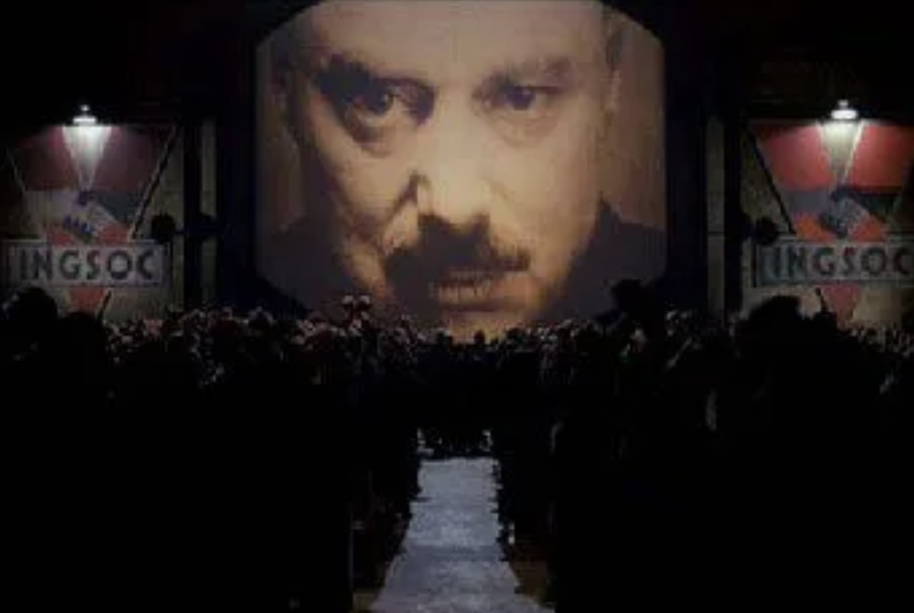

About INGSOC (English Society)
Introduction to the greatest superpower on the planet
Welcome to INGSOC, the ruling ideology of Oceania and the cornerstone of its unrivaled dominance on the global stage. INGSOC, short for English Socialism, is more than just a political system; it is the ultimate philosophy that governs every aspect of life in Oceania, ensuring total control, stability, and harmony under the watchful eye of Big Brother.
At the heart of INGSOC lies the mastery of thought and reality. Through the principles of Newspeak, the Party controls language itself, limiting the scope of thought and ensuring that rebellious ideas are impossible to even conceive. By manipulating the past, the Party also controls the future erasing and rewriting history to maintain absolute authority. Through Doublethink, citizens are taught to accept contradictions, believe in the truth of falsehoods, and embrace whatever the Party declares to be reality.
The Party is omnipotent, with the Ministry of Truth, Ministry of Peace, Ministry of Plenty, and Ministry of Love working in perfect harmony to maintain the social order. The Ministry of Truth rewrites history to align with Party doctrine; the Ministry of Peace wages endless wars to perpetuate fear and loyalty; the Ministry of Plenty controls rationing and resources to ensure dependence on the state; and the Ministry of Love punishes any and all dissent, ensuring complete psychological and physical submission.
GLORY TO THE PARTY!
GLORY TO BIG BROTHER!
LONG LIVE OCEANIA!
